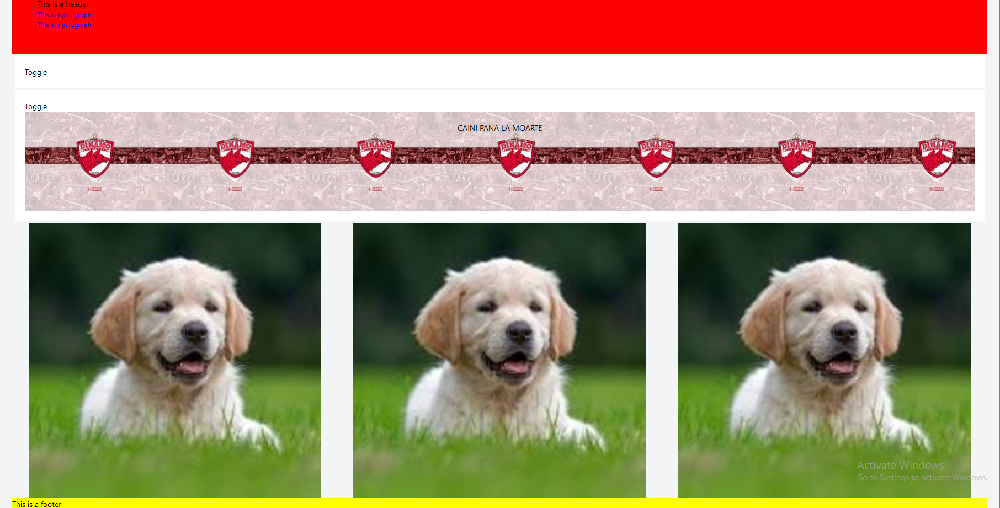

Principal components
-
Frontend
-
Description
The frontend of our application is designed to interact seamlessly with the backend, offering a dynamic user interface for creating, visualizing, and modifying web components based on user input.
-
Main Components
-
Chat: This component serves as the main interface for user interaction, allowing users to input commands that will be processed by the backend to generate web components.
-
ToggleableTextBox: A component that provides a text input for users to enter commands. Upon submission, it communicates with the backend to fetch the JSON representation of the desired UI components and updates the state accordingly.
-
HtmlCodePage: Allows users to see and edit the HTML-like string representation of the components they have generated. Users can manually edit this representation, and the component provides functionality to update the visual components based on these changes.
-
-
Key Functions
-
convertAttributesToStyle: Transforms an attributes map (key-value pairs) into a style object that can be applied to React components. This function supports converting CSS property names from various formats to camelCase, which is the format expected by React's style prop.
const convertAttributesToStyle = (attributesMap) => { return attributesMap ? Object.keys(attributesMap).reduce((style, key) => { const camelCaseKey = key.replace(/-([a-z])/g, (match, letter) => letter.toLowerCase() ); const cssProperty = convertToCssProperty( camelCaseKey, attributesMap[key] ); return { ...style, ...cssProperty }; }, {}) : {}; }; -
renderComponentFromJSON: Dynamically renders React components based on a JSON object. This function uses a mapping from component types (specified in the JSON) to React components and recursively renders children and applies styles.
-
renderComponentToString: Converts a JSON representation of components back into an HTML-like string. This is particularly useful for the HtmlCodePage component, allowing users to view and edit the generated markup.
const renderComponentFromJSON = (json, key) => { if (!json || typeof json !== "object") return null; const { type, children, attributesMap } = json; const componentMap = { Section: Section, Title: Title, Header: Header, Paragraph: Paragraph, Footer: Footer, Navbar: Navbar, Button: Button, Image: Image, Card: Card, List: List, ListItem: ListItem, Accordion: Accordion, Table: Table, Banner: Banner, PhotoGallery: PhotoGallery, }; const Component = componentMap[type] || "div"; // Fallback to 'div' if type is null or undefined const style = convertAttributesToStyle(attributesMap); const textContent = attributesMap?.text; // Extract text content if available return ( Component key={key} style={style} {textContent && "{textContent}}{" "} {/* Render text content if available */} {children && children.map((child, index) => typeof child === "object" ? ( React.Fragment key={index} {renderComponentFromJSON(child, index)} React.Fragment ) : ( React.Fragment key={index}>{child} React.Fragment ) )} Component ); };const renderComponentToString = (json, indentLevel = 0) => { if (!json || typeof json !== "object") return ""; const { type, children, attributesMap } = json; const tag = type || "div"; const style = convertAttributesToStyle(attributesMap); const styleString = Object.entries(style) .map(([key, value]) => `${key}: ${value}`) .join("; "); const textContent = attributesMap?.text || ""; const indent = " ".repeat(indentLevel * 2); // Adjust indent size as needed let childrenString = ""; if (children) { childrenString = children .map((child) => typeof child === "object" ? "\n" + renderComponentToString(child, indentLevel + 1) : child ) .join(""); } const optionalSrc = tag == "Image" ? "src=\"/dog.jpg\"" : ""; console.log(tag); let openingTag = `<${tag} style="${styleString}" ${optionalSrc}>`; let closingTag = ``; if (childrenString) { return `${indent}${openingTag}\n${indent} ${textContent}${childrenString}\n${indent}${closingTag}`; } else { return `${indent}${openingTag}${textContent}${closingTag}`; } }; -
-
Interactivity
The application's frontend facilitates interactive web component generation through user inputs. It includes features like a chat interface for inputting commands to generate UI components, a toggleable text box for direct input and backend communication, real-time visual feedback of the generated UI components, and an editable HTML-like representation of the components for manual modification and refinement.
-
Integration with Backend
The frontend interacts with the backend through HTTP requests, sending user inputs and receiving JSON representations of web components. The backend is responsible for parsing these inputs using NLP techniques, constructing a component graph, and generating the corresponding JSON objects. The frontend then uses this JSON to render the components on the screen.
-
Example Usage
-
User Input: Through the ToggleableTextBox, users can input descriptions of the UI components they wish to generate.
-
Component Generation: Upon submission, the input is sent to the backend, which returns a JSON object representing the desired UI components.
-
Visualization and Editing: The HtmlCodePage component allows users to see the generated components in an HTML-like format and edit them as needed.
-
Update and Render: Users can update the visual representation of the components based on their edits in the HtmlCodePage.
-
-
Example of Code Execution
Here is an example illustrating how a user's input can be transformed into a UI component:
- Input: "header black with 2 paragraph blue , accordion with 2 image , accordion with banner , photoGallery ,footer."
- Backend Processing: The input is parsed and converted into a JSON object representing the header component with 2 paragraph child and specified styles one accordion wiht 2 image child , one accordion with banner child, a photoGallery and a banner .
- Result: 
-
-
Backend
Technologies used : Java and Spring Boot.-
Main modules
Language processor: performs semantic parsing and validation to convert user input into a structured and machine-readable representation.
Initially, we wanted to have a format that the user needs to respect in order for the apppcation to work, and parse it using regex. For example, we thinked of a pattern pke : {component} {size} {color}
Turned out that this was very hard to work on more complex components, with multiple children, and also taking in consideration that the children can also have components, attributes and so on.
After this idea, we oriented to a NLP processing, where we did not depend any more on a specific format, but on a “vali” input, on which we can scale the application a lot better. For now, we are just using NLP, but the algorithm can be improved very much by using both nlp and regex parsing.
In order to create and handle the web components, we constructed a graph similar to the HTML DOM. For each component , we represent it a node with the next values:
- component, that represents the html component that will be created (ex. header, footer, title, image etc.);
- count, that represents how many times this component will repeat;
- A list of styles, that are the css styles that will be appped to the component;
- A list of other nodes, that are the children of the current node.
The current processing is a simple one, and follows the next rules:
- When “NOUN” is detected, it means that we have the type of the component (header, title, image);
- When “NUM” is detected, the way we handle it is to set how many instances of that component to be created. For example, header with 3 title;
- When “CCONJ” (“and”) is detected, it means that the user wants to create a component that it “brother” with the current component, so we start creating a new component. For example, header with title and image;
- When “ADP” (“with”) is detected, it means that the user wants to create a direct child to the current component. For example, header with image;
-
When “PUNCT” is detected, we have two situations :
- either the user created a component, and he wants to create another, so he will type “,”. For example, header, section, footer. This input will be translated into 3 different components.
- the end of the query has been processed, and in order to process the last node of the graph, the last character in the input will be DOT.
To achieve this NLP processing, we used the library from org.apache.opennlp. Two components from this library were used, POSTagger and Tokenizer. Also two more files for English language were downloaded and loaded into the application.
Example of how the graph is computed, for the next input : red header with 2 image, banner, 2 blue accordion with image, right section with 8 paragraph, centered footer with banner .
We can see how the attributes were applied to correctly for every component. This output was directly taken from the application, where a function was implemented that traverse the graph using dfs algorithm and print it. Currently solution is limited by the processing model, maximum depth in the graph that can be reached being 3.└── 1 section[] ├── 1 header[red] │ └── 2 image[] ├── 1 banner[] ├── 2 accordion[blue] │ └── 1 image[] ├── 1 section[] │ └── 8 paragraph[] └── 1 footer[centered] └── 1 banner[]SPARQL Endpoint: provides a standard communication interface for interacting with the RDF data store.
After the graph is constructed, using the DFS algorithm, we traverse the graph, and for each component, it queries the ontology for the default values.
This functionality was implemented using jena-fuseki-server from org.apache.jena. When the Spring application starts, a sparql endpoint also starts and loads a local ontology.
@Configuration public class SparqlConfiguration { private final String RDF_PATH = "uics.rdf"; private final String PREFIX = "http://www.semanticweb.org/adi/ontologies/2024/0/ont/"; @Bean public CommandLineRunner startFusekiServer() { return args -> { Model model = ModelFactory.createDefaultModel(); InputStream in = FileManager.getInternal().open(RDF_PATH); if (in == null) { throw new IllegalArgumentException("File: " + RDF_PATH + " not found"); } model.read(in, ""); model.setNsPrefix("", PREFIX); Dataset dataset = DatasetFactory.create(model); FusekiServer server = FusekiServer.create() .add("/dataset", dataset) .build(); server.start(); Runtime.getRuntime().addShutdownHook(new Thread(server::stop)); }; } }Ontology component
The ontology was created for mapping existing component properties. At the top level, under owl:Thing, we have WebElement. This web element has 2 direct children: CompositionalElements and StructuralElements. The compositional elements are of two types : TextBasedElement and NonTextBasedElements. All these refers to components that can not contain any other components. Examples of these components are :
- Button
- Image
- Input
- Paragraph
- Title
- List
- ListItem
- Accordion
- Banner
- Header
- Footer
- PhotoGallery

Ontology query component: extracting information about UI components, their properties, and relationships based on the ontology.
SparqlQueryExecutor class is responsable for query-ing the ontology. It uses the functionality from org.apache.jena library, and it searches in the ontology for the individuals, and retrieve them with all their fields (these fields represents the css defalt values).
private String getFormattedString(String component) { return String.format(""" PREFIX owl: http://www.w3.org/2002/07/owl# PREFIX rdf: http://www.w3.org/1999/02/22-rdf-syntax-ns# PREFIX rdfs: http://www.w3.org/2000/01/rdf-schema# PREFIX uics: http://www.semanticweb.org/adi/ontologies/2024/0/ont# SELECT ?property ?value WHERE { uics:%s ?property ?value . } """, component); }After the sparql query is constructed, using the next code, the application queries the ontology and return the response in JSON format :
try (QueryExecution queryExecution = QueryExecutionFactory.sparqlService(FUSEKI_ENDPOINT, sparqlQuery)) { ResultSet resultSet = queryExecution.execSelect(); return getJsonResult(resultSet); }UI Component Generator: Generates the UI component and styles it with the data obtained from ontology.
After the default values from the ontology are received, this component creates the new component, traverses the styles array, categorizes the styles (ex. text-align, color) and applies it to the component. Every component is, again, represented as a node in a graph, and the node has the next attributes:
- type (ex. header, footer, title, image, paragraph)
- attributesMap, where there are stored the mapped styles mentioned in the upper paragraph. For example, when we receive “red” from the client, in this map we will have {“color”: “red”};
- a list of nodes that represents the children of the current node.
The result is return to the client in JSON format. The json response for the input gray header with image, section with title and 3 paragraph, blue footer with yellow title . is :
We can see that also the adjectives were applied.{ "type": "Section", "children": [ { "type": "Header", "children": [ { "type": "Image", "children": [], "attributesMap": { "padding": "20px", "margin": "20px" } } ], "attributesMap": { "padding": "50px", "backgroundColor": "red", "color": "gray", "textAlign": "left", "text": "This is a header" } }, { "type": "Section", "children": [ { "type": "Title", "children": [], "attributesMap": { "color": "red", "textAlign": "left", "fontSize": "large", "text": "This is a title" } }, { "type": "Paragraph", "children": [], "attributesMap": { "color": "black", "textAlign": "left", "fontSize": "small", "text": "This is a paragraph" } }, { "type": "Paragraph", "children": [], "attributesMap": { "color": "black", "textAlign": "left", "fontSize": "small", "text": "This is a paragraph" } }, { "type": "Paragraph", "children": [], "attributesMap": { "color": "black", "textAlign": "left", "fontSize": "small", "text": "This is a paragraph" } } ], "attributesMap": {} }, { "type": "Footer", "children": [ { "type": "Title", "children": [], "attributesMap": { "color": "yellow", "textAlign": "left", "fontSize": "large", "text": "This is a title" } } ], "attributesMap": { "padding": "50", "backgroundColor": "yellow", "color": "blue", "text": "This is a footer", "align": "center" } } ], "attributesMap": {} }
-